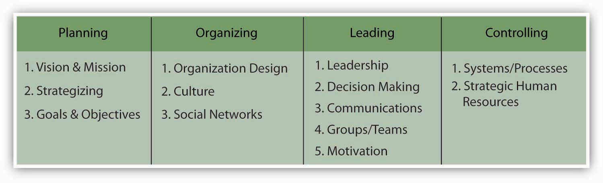
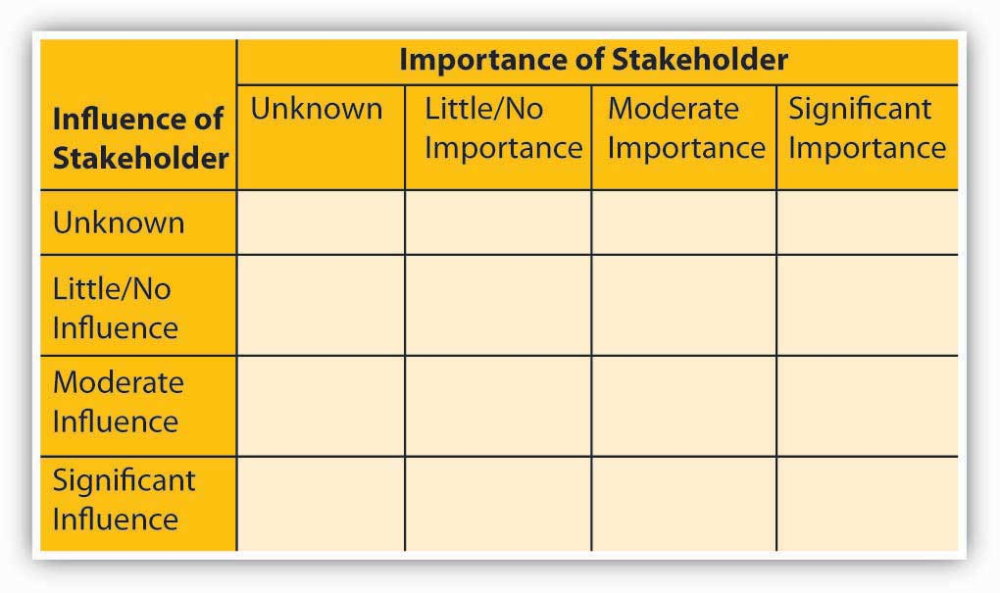

Reading this chapter will help you do the following:
As you are reminded in the figure, the letter “P” in the P-O-L-C framework stands for “planning.” Good plans are meant to achieve something—this something is captured in verbal and written statements of an organization’s mission and vision (its purpose, in addition to specific goals and objectives). With a mission and vision, you can craft a strategy for achieving them, and your benchmarks for judging your progress and success are clear goals and objectives. Mission and vision communicate the organization’s values and purpose, and the best mission and vision statements have an emotional component in that they incite employees to delight customers. The three “planning” topics of your principles of management cover (1) mission and vision, (2) strategy, and (3) goals and objectives. The figure summarizes how these pieces work together.
Figure 4.2 Mission and Vision as P-O-L-C Components
Figure 4.3 Mission and Vision in the Planning Process

Figure 4.4
Anne Mulcahy, Former Xerox Chairman of the Board (left), and Ursula Burns, Xerox CEO (right)
Source: Photo courtesy of Xerox Corporation.
As of 2010, Xerox Corporation (NYSE: XRX) is a $22 billion, multinational company founded in 1906 and operating in 160 countries. Xerox is headquartered in Norwalk, Connecticut, and employs 130,000 people. How does a company of such size and magnitude effectively manage and motivate employees from diverse backgrounds and experiences? Such companies depend on the productivity and performance of their employees. The journey over the last 100 years has withstood many successes and failures. In 2000, Xerox was facing bankruptcy after years of mismanagement, piles of debt, and mounting questions about its accounting practices.
Anne Mulcahy turned Xerox around. Mulcahy joined Xerox as an employee in 1976 and moved up the corporate ladder, holding several management positions until she became CEO in 2001. In 2005, Mulcahy was named by Fortune magazine as the second most powerful woman in business. Based on a lifetime of experience with Xerox, she knew that the company had powerful employees who were not motivated when she took over. Mulcahy believed that among other key businesses changes, motivating employees at Xerox was a key way to pull the company back from the brink of failure. One of her guiding principles was a belief that in order to achieve customer satisfaction, employees must be treated as key stakeholders and become interested and motivated in their work. Mulcahy not only successfully saw the company through this difficult time but also was able to create a stronger and more focused company.
In 2009, Mulcahy became the chairman of Xerox’s board of directors and passed the torch to Ursula Burns, who became the new CEO of Xerox. Burns became not only the first African American woman CEO to head a Standard & Poor’s (S&P) company but also the first woman to succeed another woman as the head of an S&P 100 company. Burns is also a lifetime Xerox employee who has been with the company for over 30 years. She began as a graduate intern and was hired full time after graduation. Because of her tenure with Xerox, she has close relationships with many of the employees, which provides a level of comfort and teamwork. She describes Xerox as a nice family. She maintains that Mulcahy created a strong and successful business but encouraged individuals to speak their mind, to not worry about hurting one another’s feelings, and to be more critical.
Burns explains that she learned early on in her career, from her mentors at Xerox, the importance of managing individuals in different ways and not intentionally intimidating people but rather relating to them and their individual perspectives. As CEO, she wants to encourage people to get things done, take risks, and not be afraid of those risks. She motivates her teams by letting them know what her intentions and priorities are. The correlation between a manager’s leadership style and the productivity and motivation of employees is apparent at Xerox, where employees feel a sense of importance and a part of the process necessary to maintain a successful and profitable business. In 2010, Anne Mulcahy retired from her position on the board of directors to pursue new projects.
Case written by [citation redacted per publisher request]. Based on information from Tompkins, N. C. (1992, November 1). Employee satisfaction leads to customer service. AllBusiness. Retrieved April 5, 2010, from http://www.allbusiness.com/marketing/market-research/341288-1.html; 50 most powerful women. (2006). Fortune. Retrieved April 5, 2010, from http://money.cnn.com/popups/2006/fortune/mostpowerfulwomen/2.html; Profile: Anne M. Mulcahy. (2010). Forbes. Retrieved April 5, 2010, from http://people.forbes.com/profile/anne-m-mulcahy/19732; Whitney, L. (2010, March 30). Anne Mulcahy to retire as Xerox chairman. CNET News. Retrieved April 5, 2010, from http://news.cnet.com/8301-1001_3-20001412-92.html; Bryant, A. (2010, February 20). Xerox’s new chief tries to redefine its culture. New York Times. Retrieved April 5, 2010, from http://www.nytimes.com/2010/02/21/business/21xerox.html?pagewanted=18dpc.
Mission and vision both relate to an organization’s purpose and are typically communicated in some written form. Mission and vision are statements from the organization that answer questions about who we are, what do we value, and where we’re going. A study by the consulting firm Bain and Company reports that 90% of the 500 firms surveyed issue some form of mission and vision statements.Bart, C. K., & Baetz, M. C. (1998). The relationship between mission statements and firm performance: An exploratory study. Journal of Management Studies, 35, 823–853. Moreover, firms with clearly communicated, widely understood, and collectively shared mission and vision have been shown to perform better than those without them, with the caveat that they related to effectiveness only when strategy and goals and objectives were aligned with them as well.Bart, C. K., Bontis, N., & Taggar, S. (2001). A model of the impact of mission statements on firm performance. Management Decision, 39(1), 19–35.
A mission statementA statement of purpose, describing who the company is and what it does. communicates the organization’s reason for being, and how it aims to serve its key stakeholders. Customers, employees, and investors are the stakeholders most often emphasized, but other stakeholders like government or communities (i.e., in the form of social or environmental impact) can also be discussed. Mission statements are often longer than vision statements. Sometimes mission statements also include a summation of the firm’s values. ValuesShared principles, standards, and goals. are the beliefs of an individual or group, and in this case the organization, in which they are emotionally invested. The Starbucks mission statement describes six guiding principles that, as you can see, also communicate the organization’s values:
Similarly, Toyota declares its global corporate principles to be:
A vision statementA future-oriented declaration of the organization’s purpose and aspirations., in contrast, is a future-oriented declaration of the organization’s purpose and aspirations. In many ways, you can say that the mission statement lays out the organization’s “purpose for being,” and the vision statement then says, “based on that purpose, this is what we want to become.” The strategy should flow directly from the vision, since the strategy is intended to achieve the vision and thus satisfy the organization’s mission. Typically, vision statements are relatively brief, as in the case of Starbuck’s vision statement, which reads: “Establish Starbucks as the premier purveyor of the finest coffee in the world while maintaining our uncompromising principles as we grow.”Retrieved October 27, 2008, from http://www.starbucks.com/aboutus. Or ad firm Ogilvy & Mather, which states their vision as “an agency defined by its devotion to brands.”Retrieved October 27, 2008, from http://www.ogilvy.com/o_mather. Sometimes the vision statement is also captured in a short tag line, such as Toyota’s “moving forward” statement that appears in most communications to customers, suppliers, and employees.Retrieved October 27, 2008, from http://www.toyota.com/about/our_values/index.html. Similarly, Wal-Mart’s tag-line version of its vision statement is “Save money. Live better.”Retrieved October 27, 2008, from http://www.walmart.com.
Any casual tour of business or organization Web sites will expose you to the range of forms that mission and vision statements can take. To reiterate, mission statements are longer than vision statements, often because they convey the organizations core values. Mission statements answer the questions of “Who are we?” and “What does our organization value?” Vision statements typically take the form of relatively brief, future-oriented statements—vision statements answer the question “Where is this organization going?” Increasingly, organizations also add a values statementA written statement that reaffirms or states outright the organization’s values that might not be evident in the mission or vision statements. which either reaffirms or states outright the organization’s values that might not be evident in the mission or vision statements.
Mission and vision statements play three critical roles: (1) communicate the purpose of the organization to stakeholders, (2) inform strategy development, and (3) develop the measurable goals and objectives by which to gauge the success of the organization’s strategy. These interdependent, cascading roles, and the relationships among them, are summarized in the figure.
Figure 4.5 Key Roles of Mission and Vision

First, mission and vision provide a vehicle for communicating an organization’s purpose and values to all key stakeholders. Stakeholders are those key parties who have some influence over the organization or stake in its future. You will learn more about stakeholders and stakeholder analysis later in this chapter; however, for now, suffice it to say that some key stakeholders are employees, customers, investors, suppliers, and institutions such as governments. Typically, these statements would be widely circulated and discussed often so that their meaning is widely understood, shared, and internalized. The better employees understand an organization’s purpose, through its mission and vision, the better able they will be to understand the strategy and its implementation.
Second, mission and vision create a target for strategy development. That is, one criterion of a good strategy is how well it helps the firm achieve its mission and vision. To better understand the relationship among mission, vision, and strategy, it is sometimes helpful to visualize them collectively as a funnel. At the broadest part of the funnel, you find the inputs into the mission statement. Toward the narrower part of the funnel, you find the vision statement, which has distilled down the mission in a way that it can guide the development of the strategy. In the narrowest part of the funnel you find the strategy —it is clear and explicit about what the firm will do, and not do, to achieve the vision. Vision statements also provide a bridge between the mission and the strategy. In that sense the best vision statements create a tension and restlessness with regard to the status quo—that is, they should foster a spirit of continuous innovation and improvement. For instance, in the case of Toyota, its “moving forward” vision urges managers to find newer and more environmentally friendly ways of delighting the purchaser of their cars. London Business School professors Gary Hamel and C. K. Prahalad describe this tense relationship between vision and strategy as stretch and ambition. Indeed, in a study of such able competitors as CNN, British Airways, and Sony, they found that these firms displaced competitors with stronger reputations and deeper pockets through their ambition to stretch their organizations in more innovative ways.Hamel, G., & Prahalad, C. K. (1993, March–April). Strategy as stretch and leverage. Harvard Business Review, 75–84.
Third, mission and vision provide a high-level guide, and the strategy provides a specific guide, to the goals and objectives showing success or failure of the strategy and satisfaction of the larger set of objectives stated in the mission. In the cases of both Starbucks and Toyota, you would expect to see profitability goals, in addition to metrics on customer and employee satisfaction, and social and environmental responsibility.
Mission and vision both relate to an organization’s purpose and aspirations, and are typically communicated in some form of brief written statements. A mission statement communicates the organization’s reason for being and how it aspires to serve its key stakeholders. The vision statement is a narrower, future-oriented declaration of the organization’s purpose and aspirations. Together, mission and vision guide strategy development, help communicate the organization’s purpose to stakeholders, and inform the goals and objectives set to determine whether the strategy is on track.
Mission and vision play such a prominent role in the planning facet of the P-O-L-C framework. However, you are probably not surprised to learn that their role does not stop there. Beyond the relationship between mission and vision, strategy, and goals and objectives, you should expect to see mission and vision being related to the organizing, leading, and controlling aspects as well. Let’s look at these three areas in turn.
OrganizingThe function of management that involves developing an organizational structure and allocating human resources to ensure the accomplishment of objectives. is the function of management that involves developing an organizational structure and allocating human resources to ensure the accomplishment of objectives. The organizing facet of the P-O-L-C framework typically includes subjects such as organization design, staffing, and organizational culture. With regard to organizing, it is useful to think about alignment between the mission and vision and various organizing activities. For instance, organizational designA formal, guided process for integrating the people, information, and technology of an organization. is a formal, guided process for integrating the people, information, and technology of an organization. It is used to match the form of the organization as closely as possible to the purpose(s) the organization seeks to achieve. Through the design process, organizations act to improve the probability that the collective efforts of members will be successful.
Organization design should reflect and support the strategy—in that sense, organizational design is a set of decision guidelines by which members will choose appropriate actions, appropriate in terms of their support for the strategy. As you learned in the previous section, the strategy is derived from the mission and vision statements and from the organization’s basic values. Strategy unifies the intent of the organization and focuses members toward actions designed to accomplish desired outcomes. The strategy encourages actions that support the purpose and discourages those that do not.
To organize, you must connect people with each other in meaningful and purposeful ways. Further, you must connect people—human resources—with the information and technology necessary for them to be successful. Organization structure defines the formal relationships among people and specifies both their roles and their responsibilities. Administrative systems govern the organization through guidelines, procedures, and policies. Information and technology define the process(es) through which members achieve outcomes. Each element must support each of the others, and together they must support the organization’s purpose, as reflected in its mission and vision.
For example, in 2006, Disney acquired Pixar, a firm is renowned for its creative prowess in animated entertainment. Disney summarizes the Pixar strategy like this: “Pixar’s [strategy] is to combine proprietary technology and world-class creative talent to develop computer-animated feature films with memorable characters and heartwarming stories that appeal to audiences of all ages.”Retrieved October 27, 2008, from http://www.pixar.com/companyinfo/about_us/overview.htm. Disney has helped Pixar achieve this strategy through an important combination of structural design choices. First, Pixar is an independent division of Disney and is empowered to make independent choices in all aspects of idea development. Second, Pixar gives its “creatives”—its artists, writers, and designers—great leeway over decision making. Third, Pixar protects its creatives’ ability to share work in progress, up and down the hierarchy, with the aim of getting it even better. Finally, after each project, teams conduct “postmortems” to catalog what went right and what went wrong. This way, innovations gained through new projects can be shared with later projects, while at the same time sharing knowledge about potential pitfalls.Catmull, E. (2008, September). How Pixar fosters collective creativity. Harvard Business Review, 1–11.
Organizational cultureA system of shared assumptions, values, and beliefs showing people what is appropriate and inappropriate behavior. is the workplace environment formulated from the interaction of the employees in the workplace. Organizational culture is defined by all of the life experiences, strengths, weaknesses, education, upbringing, and other attributes of the employees. While executive leaders play a large role in defining organizational culture by their actions and leadership, all employees contribute to the organizational culture.
As you might imagine, achieving alignment between mission and vision and organizational culture can be very powerful, but culture is also difficult to change. This means that if you are seeking to change your vision or mission, your ability to change the organization’s culture to support those new directions may be difficult, or, at least, slow to achieve.
For instance, in 2000, Procter & Gamble (P&G) sought to change a fundamental part of its vision in a way that asked the organization to source more of its innovations from external partners. Historically, P&G had invested heavily in research and development and internal sources of innovation—so much so that “not invented here” (known informally as NIH) was the dominant cultural mind-set.Lafley, A. G., & Charan, R. (2008). The game changer. Upper Saddle River, NJ: Crown Books. NIH describes a sociological, corporate, or institutional culture that avoids using products, research, or knowledge that originated anywhere other than inside the organization. It is normally used in a pejorative sense. As a sociological phenomenon, the “not invented here” syndrome is manifested as an unwillingness to adopt an idea or product because it originates from another culture. P&G has been able to combat this NIH bias and gradually change its culture toward one that is more open to external contributions, and hence in much better alignment with its current mission and vision.
Social networksIndividuals or organizations tied to one another by one or more specific types of interdependency. are often referred to as the “invisible organization.” They consist of individuals or organizations connected by one or more specific types of interdependency. You are probably already active in social networks through such Web communities as MySpace, Facebook, and LinkedIn. However, these sites are really only the tip of the iceberg when it comes to the emerging body of knowledge surrounding social networks. Networks deliver three unique advantages: access to “private” information (i.e., information that companies do not want competitors to have), access to diverse skill sets, and power. You may be surprised to learn that many big companies have breakdowns in communications even in divisions where the work on one project should be related to work on another. Going back to our Pixar example, for instance, Disney is fostering a network among members of its Pixar division in a way that they are more likely to share information and learn from others. The open internal network also means that a cartoon designer might have easier access to a computer programmer and together they can figure out a more innovative solution. Finally, since Pixar promotes communication across hierarchical levels and gives creatives decision-making authority, the typical power plays that might impede sharing innovation and individual creativity are prevented. Managers see these three network advantages at work every day but might not pause to consider how their networks regulate them.
LeadingInvolves influencing others toward the attainment of organizational objectives. involves influencing others toward the attainment of organizational objectives. Leading and leadership are nearly synonymous with the notions of mission and vision. We might describe a very purposeful person as being “on a mission.” As an example, Steve Demos had the personal mission of replacing cow’s milk with soy milk in U.S. supermarkets, and this mission led to his vision for, and strategy behind, the firm White Wave and its Silk line of soy milk products.Carpenter, M. A., & Sanders, W. G. (2006). Strategic management: A dynamic perspective. (1st ed.). Upper Saddle River, NJ: Pearson/Prentice-Hall. Similarly, we typically think of some individuals as leaders because they are visionary. For instance, when Walt Disney suggested building a theme park in a Florida swamp back in the early 1960s, few other people in the world seemed to share his view.
Any task—whether launching Silk or building the Disney empire— is that much more difficult if attempted alone. Therefore, the more that a mission or vision challenges the status quo—and recognizing that good vision statements always need to create some dissonance with the status quo—the greater will be the organization’s need of what leadership researcher Shiba calls “real change leaders”—people who will help diffuse the revolutionary philosophy even while the leader (i.e., the founder or CEO) is not present. Without real change leaders, a revolutionary vision would remain a mere idea of the visionary CEO—they are the ones who make the implementation of the transformation real.
In most cases where we think of revolutionary companies, we associate the organization’s vision with its leader—for instance, Apple and Steve Jobs, Dell and Michael Dell, or Google with the team of Sergey Brin and Larry Page. Most important, in all three of these organizations, the leaders focused on creating an organization with a noble mission that enabled the employees and management team to achieve not only the strategic breakthrough but to also realize their personal dreams in the process. Speaking to the larger relationship between mission, vision, strategy, and leadership, are the Eight principles of visionary leadership, derived from Shiba’s 2001 book, Four Practical Revolutions in Management (summarized in “Eight Principles of Visionary Leadership”Shiba, S., & Walden, D. (2001). Four practical revolutions in management: Systems for creating unique organizational capability. New York: Productivity Press.).
A broader definition of visionary leadership suggests that, if many or most of an organization’s employees understand and identify with the mission and vision, efficiency will increase because the organization’s members “on the front lines” will be making decisions fully aligned with the organization’s goals. Efficiency is achieved with limited hands-on supervision because the mission and vision serve as a form of cruise control. To make frontline responsibility effective, leadership must learn to trust workers and give them sufficient opportunities to develop quality decision-making skills.
The classic case about Johnsonville Sausage, recounted by CEO Ralph Stayer, documents how that company dramatically improved its fortunes after Stayer shared responsibility for the mission and vision, and ultimately development of the actual strategy, with all of his employees. His vision was the quest for an answer to “What Johnsonville would have to be to sell the most expensive sausage in the industry and still have the biggest market share?”Stayer, R. (1990, November). How I learned to let my workers lead. Harvard Business Review. Of course, he made other important changes as well, such as decentralizing decision making and tying individual’s rewards to company-wide performance, but he initiated them by communicating the organization’s mission and vision and letting his employees know that he believed they could make the choices and decisions needed to realize them.
Mission and vision are also relevant to leadership well beyond the impact of one or several top executives. Even beyond existing employees, various stakeholders—customers, suppliers, prospective new employees—are visiting organizations’ Web sites to read their mission and vision statements. In the process, they are trying to understand what kind of organization they are reading about and what the organization’s values and ethics are. Ultimately, they are seeking to determine whether the organization and what it stands for are a good fit for them.
ControllingEnsuring that performance does not deviate from standards. Controlling consists of three steps, which include (1) establishing performance standards, (2) comparing actual performance against standards, and (3) taking corrective action when necessary. involves ensuring that performance does not deviate from standards. Controlling consists of three steps: (1) establishing performance standards, (2) comparing actual performance against standards, and (3) taking corrective action when necessary. Mission and vision are both directly and indirectly related to all three steps.
Recall that mission and vision tell a story about an organization’s purpose and aspirations. Mission and vision statements are often ambiguous by design because they are intended to inform the strategy not be the strategy. Nevertheless, those statements typically provide a general compass heading for the organization and its employees. For instance, vision may say something about innovativeness, growth, or firm performance, and the firm will likely have set measurable objectives related to these. Performance standards often exceed actual performance but, ideally, managers will outline a set of metrics that can help to predict the future, not just evaluate the past.
It is helpful to think about such metrics as leading, lagging, and pacing indicators. A leading indicatorA measure of performance that serves to predict where the firm is going, in terms of performance. actually serves to predict where the firm is going, in terms of performance. For instance, General Electric asks customers whether they will refer it new business, and GE’s managers have found that this measure of customer satisfaction does a pretty good job of predicting future sales. A pacing indicatorA measure of performance that tells you in real-time that the organization is on track. tells you in real time that the organization is on track, for example, in on-time deliveries or machinery that is in operation (as opposed to being under repair or in maintenance). A lagging indicatorA measure of performance that shows how well the firm has done historically. is the one we are all most familiar with. Firm financial performance, for instance, is an accounting-based summary of how well the firm has done historically. Even if managers can calculate such performance quickly, the information is still historic and not pacing or leading. Increasingly, firms compile a set of such leading, lagging, and pacing goals and objectives and organize them in the form of a dashboard or Balanced Scorecard.
The goals and objectives that flow from your mission and vision provide a basis for assessing actual versus desired performance. In many ways, such goals and objectives provide a natural feedback loop that helps managers see when and how they are succeeding and where they might need to take corrective action. This is one reason goals and objectives should ideally be specific and measurable. Moreover, to the extent that they serve as leading, lagging, and pacing performance metrics, they enable managers to take corrective action on any deviations from goals before too much damage has been done.
Finally, just as mission and vision should lead to specific and measurable goals and objectives and thus provide a basis for comparing actual and desired performance, corrective action should also be prompted in cases where performance deviates negatively from performance objectives. It is important to point out that while mission and vision may signal the need for corrective action, because they are rather general, high-level statements they typically will not spell out what specific actions—that latter part is the role of strategy, and mission and vision are critical for good strategies but not substitutes for them. A mission and vision are statements of self-worth. Their purpose is not only to motivate employees to take meaningful action but also to give leadership a standard for monitoring progress. It also tells external audiences how your organization wishes to be viewed and have its progress and successes gauged.
Strategic human resources management (SHRM)Management strategy that reflects the aim of tying the organization’s human capital, its people, into the mission and vision. reflects the aim of integrating the organization’s human capital—its people—into the mission and vision. Human resources management alignment means to integrate decisions about people with decisions about the results an organization is trying to obtain. Research indicates that organizations that successfully align human resources management with mission and vision accomplishment do so by integrating SHRM into the planning process, emphasizing human resources activities that support mission goals, and building strong human resources/management capabilities and relationships.Gerhart, B. A., & Rynes, S. L. (2003). Compensation: Theory, Evidence, and Strategic Implications. Thousand Oaks, CA, Sage;.
In addition to being a key part of the planning process, mission and vision also play key roles in the organizing, leading, and controlling functions of management. While mission and vision start the planning function, they are best realized when accounted for across all four functions of management—P-O-L-C. In planning, mission and vision help to generate specific goals and objectives and to develop the strategy for achieving them. Mission and vision guide choices about organizing, too, from structure to organizational culture. The cultural dimension is one reason mission and vision are most effective when they pervade the leadership of the entire organization, rather than being just the focus of senior management. Finally, mission and vision are tied to the three key steps of controlling: (1) establishing performance standards, (2) comparing actual performance against standards, and (3) taking corrective action when necessary. Since people make the place, ultimately strategic human resources management must bring these pieces together.
Creativity and passion are of particular relevance to mission and vision statements. A simple definition of creativityThe generation of new ideas. is the power or ability to invent. We sometimes think of creativity as being a purely artistic attribute, but creativity in business is the essence of innovation and progress. PassionAn intense, driving, or overmastering feeling or conviction. Passion is also associated with intense emotion compelling action. at least in the context we invoke here, refers to an intense, driving, or overmastering feeling or conviction. Passion is also associated with intense emotion compelling action. We will focus mostly on the relationship between creativity, passion, and vision in this section because organizational visions are intended to create uneasiness with the status quo and help inform and motivate key stakeholders to move the organization forward. This means that a vision statement should reflect and communicate something that is relatively novel and unique, and such novelty and uniqueness are the products of creativity and passion.
Creativity and passion can, and probably should, also influence the organization’s mission. In many ways, the linkages might be clearest between creativity and vision statements and passion and mission statements because the latter is an expression of the organization’s values and deeply held beliefs. Similarly, while we will discuss creativity and passion separately in this section, your intuition and experience surely tell you that creativity eventually involves emotion, to be creative, you have to care about—be passionate about—what you’re doing.
More recently, work by DeGraf and Lawrence, suggest a finer-grained view into the characteristics and types of creativity.DeGraf, J., & Lawrence, K. A. (2002). Creativity at Work: Developing the Right Practices to Make It Happen. San Francisco: Jossey-Bass. They argued that creativity “types” could be clustered based on some combination of flexibility versus control and internal versus external orientation. For the manager, their typology is especially useful as it suggests ways to manage creativity, as in simply hiring creative individuals. As summarized in the figure, their research suggests that there are four types of creativity: (1) investment (external orientation with high control), (2) imagination (external orientation with flexibility emphasis), (3) improvement (internal orientation with high control), and (4) incubation (internal orientation with flexibility emphasis).
The first type of creativity, investment, is associated with speed—being first and being fast. It is also a form of creativity fostered from the desire to be highly competitive. Perhaps one of the most recent examples of this type of creativity crucible is the beer wars—the battle for U.S. market share between SABMiller and Anheuser Busch (AB; Budweiser). Miller was relentless in attacking the quality of AB’s products through its advertisements, and at the same time launched a myriad number of new products to take business from AB’s stronghold markets.Retrieved October 27, 2008, from http://www.bizjournals.com/milwaukee/stories/2004/05/31/story7.html.
The second type of creativity, imagination, is the form that most of us think of first. This type of creativity is characterized by new ideas and breakthroughs: Apple’s stylish design of Macintosh computers and then game-changing breakthroughs with its iPod and iPhone. Oftentimes, we can tie this type of creativity to the drive or genius of a single individual, such as Apple’s Steve Jobs.
Figure 4.8 Four Creativity Types

Adapted from DeGraf, J., & Lawrence, K. A. (2002). Creativity at Work: Developing the Right Practices to Make It Happen. San Francisco: Jossey-Bass.
Where big ideas come from the imagination quadrant, improvement is a type of creativity that involves making an existing idea better. Two great examples of this are McDonald’s and Toyota. Ray Kroc, McDonald’s founder, had the idea of creating quality and cooking standards for preparing tasty burgers and fries. While there were many other burger joints around at the time (the 1950s), Kroc’s unique process-oriented approach gave McDonald’s a big advantage. Similarly, Toyota has used the refinement of its automaking and auto-assembly processes (called the Toyota Business System) to be one of the largest and most successful, high-quality car makers in the world.
Finally, the fourth area of creativity is incubation. Incubation is a very deliberate approach that concerns a vision of sustainability—that is, leaving a legacy. This type of creativity is more complex because it involves teamwork, empowerment, and collective action. In their chapter on problem solving, David Whetten and Kim Cameron provide Gandhi as an example of incubation creativity:
“Mahatma Gandhi was probably the only person in modern history who has single-handedly stopped a war. Lone individuals have started wars, but Gandhi was creative enough to stop one. He did so by mobilizing networks of people to pursue a clear vision and set of values. Gandhi would probably have been completely noncreative and ineffective had he not been adept at capitalizing on incubation dynamics. By mobilizing people to march to the sea to make salt, or to burn passes that demarcated ethnic group status, Gandhi was able to engender creative outcomes that had not been considered possible. He was a master at incubation by connecting, involving, and coordinating people.”Whetten, D., & Camerson, K. (2007). Developing Management skills. (7th ed.). Upper Saddle River, NJ: Pearson/Prentice-Hall, 185.
While no one of these four types of creativity is best, they have some contradictory or conflicting characteristics. For example, imagination and improvement emphasize different approaches to creativity. The size of the new idea, for instance, is typically much bigger with imagination (i.e., revolutionary solutions) than with improvement (i.e., incremental solutions). Investment and incubation also are very different—investment is relatively fast, and the other relatively slow (i.e., incubation emphasizes deliberation and development).
In this section, we introduce you to two creativity tools: SCAMPER and the Nominal Group Technique. This set of tools is not exhaustive but gives you some good intuition and resources to develop new ideas—either to craft a vision for a new company or revise an existing mission and vision. The first three tools can be used and applied individually or in groups; Nominal Group Technique is designed to bolster creativity in groups and can build on individual and group insights provided by the other tools.
All these tools help you to manage two divergent forms of thinking necessary for creativity—programmed thinking and lateral thinking. Programmed thinkingThinking that relies on logical or structured ways of creating a new product or service (often called left-brained thinking). often called left-brained thinking, relies on logical or structured ways of creating a new product or service. In terms of mission and vision, this means a logical and deliberate process is used to develop the vision statement. Lateral thinkingA thinking process that is about changing patterns and perceptions (often called right-brained thinking). a term coined by Edward DeBono in his book The Use of Lateral Thinking (1967), is about changing patterns and perceptions; it is about ideas that may not be obtainable by using only traditional step-by-step, programmed, logic.De Bono, E. (1992). Serious Creativity. New York: Harper Business; Osborn, A. (1953). Applied Imagination. New York: Scribner’s . Lateral thinking draws on the right side of our brains.
Each type of approach—programmed versus lateral—has its strength. Logical and disciplined programmed thinking is enormously effective in making products and services better. It can, however, only go so far before all practical improvements have been carried out. Lateral thinking can generate completely new concepts and ideas and brilliant improvements to existing systems. In the wrong place, however, it can be impractical or unnecessarily disruptive.
Developed by Bob Eberle, SCAMPERSCAMPER is a checklist tool that helps you to think of changes you can make to an existing marketplace to create a new one: a new product, a new service, or both. is a checklist tool that helps you to think of changes you can make to an existing marketplace to create a new one—a new product, a new service, or both.Eberle, R. (1997). Scamper: Creative Games and Activities for Imagination Development. New York: Prufrock Press. You can use these changes either as direct suggestions or as starting points for lateral thinking. This, in turn, can inspire a new vision statement. Table 4.1 "Creativity through SCAMPER" provides you with the SCAMPER question steps and examples of new products or services that you might create.
Table 4.1 Creativity through SCAMPER
| Questions: | Examples: |
|---|---|
| Substitute: What else instead? Who else instead? Other ingredients? Other material? Other time? Other place? | Vegetarian hot dogs |
| Combine: How about a blend? Combine purposes? Combine materials? | Musical greeting cards |
| Adapt: What else is like this? What other idea does this suggest? How can I adjust to these circumstances? | Snow tires |
| Modify: Different order, form, shape? Minify: What to make smaller? Slower? Lighter? What to do with less frequency? Magnify: What to make higher? Longer? Thicker? What to do with greater frequency? | Scented crayons; Bite-sized Snickers bars; Super-sized french fries |
| Put to other uses: New ways to use as is? Other uses I modified? Other places to use an item or movement? | Towel as fly swatter |
| Eliminate: What to remove? Omit? Understate? | Cordless telephone |
| Rearrange: Other layout? Other sequence? Transpose cause and effect? Transpose positive and negative? How about opposites? Reverse: Interchange components? Other pattern? Backward? Upside down? | Vertical stapler; Reversible clothing |
As shown in the Table 4.1 "Creativity through SCAMPER", by taking a topic or problem and then using SCAMPER, you can generate possible new products. It may be some combination of these SCAMPER changes that lead to highly innovative solutions. For instance, the entertainment company Cirque du Soliel has modeled its shows on the traditional circus. However, it has adapted aspects of theater and opera, eliminated animals, and reduced the number of rings from three to one. As a result, it offers a highly stylized (and much more expensive!) version of what, nostalgically, we call a circus today. Many of the ideas may be impractical. However, some of these ideas could be good starting points for a new organization or revision of the vision for an existing one.
The Nominal Group Technique (NGT)A widely used small group process technique whose purpose is to produce a large number of ideas in a relatively short period of time. is a method of facilitating a group of people to produce a large number of ideas in a relatively short time.This section is reproduced with permission of the University of Wisconsin Extension Program. A circulation version can be found at http://www.uwex.edu/ces/pdande/resources/pdf/Tipsheet3.pdf (retrieved October 28, 2008). Additional information on NGT can be gained by reading the following: Delbecq, A., Van de Ven, A., & Gustafson, D. (1975). Group Techniques for Program Planning: A Guide to Nominal Group and Delphi Processes. Glenview, IL: Scott, Foresman; Tague, N. (1995). The Quality Toolbox. Milwaukee, WI: ASQC Quality Press; Witkin, B., & Altschuld, J. (1995). Planning and Conducting Needs Assessment: A Practical Guide. Thousands Oaks, CA, Sage;. In addition to using NGT to develop a mission and vision statement, it can be useful:
As shown in “NGT Preparation and Supplies,” preparation and supplies are modest. It encourages contributions from everyone by allowing for equal participation among group members. A question is posed to the group. Individually and silently, each participant writes down his or her ideas. In round-robin fashion, each member supplies an idea until all ideas are shared. Generally, 6 to 10 people participate. “Nominal” means that the participants form a group in name only. For most of the session, they do not interact as they would in other group processes.
Formulate your discussion question. Ensure that the wording prevents misunderstanding and is objective. Supplies needed include:
The group is divided into small work groups, each with a leader. A flip chart and markers are needed at each table. Position the flip chart so that all can see the ideas. The remaining simple procedures are summarized in “NGT Procedure.”
Passion as we invoke the term in this chapter, refers to intense, driving, or overmastering feeling or conviction. Passion is also associated with intense emotion compelling action. Passion is relevant to vision in at least two ways: (1) Passion about an idea as inspiration of the vision and vision statement and (2) shared passion among organizational members about the importance of the vision.
Entrepreneur Curt Rosengren makes this observation about the relationship between passion and entrepreneurship: “Strangely, in spite of its clear importance, very few entrepreneurs or managers consciously incorporate passion into their decisions, ultimately leaving one of their most valuable assets on their path to success largely to chance, even though there is little question that passion can be a part of vision creation.”Retrieved October 28, 2008, from http://www.astroprojects.com/media/MSPassion8.html. Rosengren comments further that:
“Passion is the essence of the entrepreneurial spirit. It is an entrepreneur’s fuel, providing the drive and inspiration to create something out of nothing while enduring all the risks, uncertainty, and bumps in the road that that entails.
“Entrepreneurs’ lives consist of a nonstop mission to communicate their vision and inspire others to support their efforts. As evangelists, salespeople, fundraisers, and cheerleaders they need to breathe life into their vision while enlisting others in their dream. From creating a vision for the future to selling the idea to investors, from attracting high-quality employees to inspiring them to do what nobody thought possible, that passion is a key ingredient.
“Passion also plays a key role in their belief that they can achieve the so-called impossible, bouncing back from failure and ignoring the chorus of No that is inevitably part of the entrepreneurial experience.
“Robin Wolaner, founder of Parenting magazine and author of Naked In The Boardroom: A CEO Bares Her Secrets So You Can Transform Your Career, put it succinctly when she said, ‘To succeed in starting a business you have to suspend disbelief, because the odds are against you. Logic is going to stop you.’ Passion, on the other hand, will help you fly.”Retrieved October 28, 2008, from http://www.astroprojects.com/media/MSPassion8.html.
Passion doesn’t just have benefits for the individual entrepreneur or manager when formulating a vision statement, it can help the whole business thrive. While there is little academic research on the relationship between passion and vision, studies suggest that fostering engagement, a concept related to passion, in employees has a significant effect on the corporate bottom line. Gallup, for instance, has been on the forefront of measuring the effect of what it calls employee engagement. Employee engagementA concept, related to passion, that is generally viewed as managing discretionary effort; that is, when employees have choices, they will act in a way that furthers their organization’s interests. is a concept that is generally viewed as managing discretionary effort; that is, when employees have choices, they will act in a way that furthers their organization’s interests. An engaged employee is fully involved in, and enthusiastic about, his or her work.http://www.gallup.com/consulting/52/Employee-Engagement.aspx. The consulting firm BlessingWhite offers this description of engagement and its value (and clear relationship with passion):
“Engaged employees are not just committed. They are not just passionate or proud. They have a line-of-sight on their own future and on the organization’s mission and goals. They are ‘enthused’ and ‘in gear’ using their talents and discretionary effort to make a difference in their employer’s quest for sustainable business success.” (Employee Engagement Report 2008)BlessingWhite. (2008, April). 2008 employee engagement report. http://www.blessingwhite.com/eee__report.asp.
Engaged employees are those who are performing at the top of their abilities and happy about it. According to statistics that Gallup has drawn from 300,000 companies in its database, 75%–80% of employees are either “disengaged” or “actively disengaged.”Retrieved October 28, 2008, from http://gmj.gallup.com/content/24880/Gallup-Study-Engaged-Employees-Inspire-Company.aspx.
That’s an enormous waste of potential. Consider Gallup’s estimation of the impact if 100% of an organization’s employees were fully engaged:
Job satisfaction studies in the United States routinely show job satisfaction ratings of 50%–60%. But one recent study by Harris Interactive of nearly 8,000 American workers went a step further.Retrieved October 29, 2008, from http://www.agewave.com/media_files/rough.html.http:// What did the researchers find?
Consciously creating an environment where passion is both encouraged and actively developed can yield an enormous competitive advantage. That environment starts at the top through the development and active communication of mission and vision.
You learned about the relationship between creativity and passion and mission and vision. You learned that creativity relates to the power or ability to create and that passion is intense emotion compelling action. Creativity is important if the desired mission and vision are desired to be novel and entrepreneurial; passion is important both from the standpoint of adding energy to the mission and vision and to key stakeholders following the mission and vision.
StakeholdersIndividuals and organizations who are actively involved in the organization, or whose interests may be positively or negatively affected as a result of what the organization does. are individuals or groups who have an interest in an organization’s ability to deliver intended results and maintain the viability of its products and services. We’ve already stressed the importance of stakeholders to a firm’s mission and vision. We’ve also explained that firms are usually accountable to a broad range of stakeholders, including shareholders, who can make it either more difficult or easier to execute a strategy and realize its mission and vision. This is the main reason managers must consider stakeholders’ interests, needs, and preferences.
Considering these factors in the development of a firm’s mission and vision is a good place to start, but first, of course, you must identify critical stakeholders, get a handle on their short- and long-term interests, calculate their potential influence on your strategy, and take into consideration how the firms strategy might affect the stakeholders (beneficially or adversely). Table 4.2 "Stakeholder Categories" provides one way to begin thinking about the various stakeholder groups, their interests, importance, and influence. InfluenceA stakeholder’s relative power over and within an organization. reflects a stakeholder’s relative power over and within an organization; importanceThe degree to which the organization cannot be considered successful if a stakeholder’s needs, expectations, and issues are not addressed. indicates the degree to which the organization cannot be considered successful if a stakeholder’s needs, expectations, and issues are not addressed.
Table 4.2 Stakeholder Categories
| Stakeholder | Categories | Interests | Importance | Influence |
|---|---|---|---|---|
| Owners | ||||
| Managers | ||||
| Employees | ||||
| Customers | ||||
| Environmental | ||||
| Social | ||||
| Government | ||||
| Suppliers | ||||
| Competitors | ||||
| Other? |
Adapted from http://www.stsc.hill.af.mil/crosstalk/2000/12/smith.html.
As you can imagine, for instance, one key stakeholder group comprises the CEO and the members of the top-management team. These are key managers, and they might be owners as well. This group is important for at least three reasons:
Typically, stakeholder evaluation of both quantitative and qualitative performance outcomes will determine whether management is effective. Quantitative outcomes include stock price, total sales, and net profits, while qualitative outcomes include customer service and employee satisfaction. As you can imagine, different stakeholders may place more emphasis on some outcomes than other stakeholders, who have other priorities.
Stakeholder analysisThe range of techniques or tools used to identify and to understand the needs and expectations of major interests inside and outside the organization environment. refers to the range of techniques or tools used to identify and understand the needs and expectations of major interests inside and outside the organization environment. Managers perform stakeholder analysis to gain a better understanding of the range and variety of groups and individuals who not only have a vested interest in the organization, and ultimately the formulation and implementation of a firm’s strategy, but who also have some influence on firm performance. Managers thus develop mission and vision statements, not only to clarify the organization’s larger purpose but also to meet or exceed the needs of its key stakeholders.
Stakeholder analysis may also enable managers to identify other parties that might derail otherwise well-formulated strategies, such as local, state, national, or foreign governmental bodies. Finally, stakeholder analysis enables organizations to better formulate, implement, and monitor their strategies, and this is why stakeholder analysis is a critical factor in the ultimate implementation of a strategy.
The first step in stakeholder analysis is identifying major stakeholder groups. As you can imagine, the groups of stakeholders who will, either directly or indirectly, be affected by or have an effect on a firm’s strategy and its execution can run the gamut from employees, to customers, to competitors, to the government. Ultimately, we will want to take these stakeholders and plot them on a chart, similar to that shown in the following figure.
Figure 4.10 Stakeholder Mapping
Adapted from Freeman, R. E. (1984). Strategic Management: A Stakeholder Approach. Boston: Pitman.
Let’s pause for a moment to consider the important constituencies we will be charting on our stakeholder map. Before we start, however, we need to remind ourselves that stakeholders can be individuals or groups—communities, social or political organizations, and so forth. In addition, we can break groups down demographically, geographically, by level and branch of government, or according to other relevant criteria. In so doing, we’re more likely to identify important groups that we might otherwise overlook.
With these facts in mind, you can see that, externally, a map of stakeholders will include such diverse groups as governmental bodies, community-based organizations, social and political action groups, trade unions and guilds, and even journalists. National and regional governments and international regulatory bodies will probably be key stakeholders for global firms or those whose strategy calls for greater international presence. Internally, key stakeholders include shareholders, business units, employees, and managers.
Identifying all of a firm’s stakeholders can be a daunting task. In fact, as we will note again shortly, a list of stakeholders that is too long actually may reduce the effectiveness of this important tool by overwhelming decision makers with too much information. To simplify the process, we suggest that you start by identifying groups that fall into one of four categories: organizational, capital market, product market, and social. Let’s take a closer look at this step.
Step 1: Determining Influences on Mission, Vision, and Strategy Formulation. One way to analyze the importance and roles of the individuals who compose a stakeholder group is to identify the people and teams who should be consulted as strategy is developed or who will play some part in its eventual implementation. These are organizational stakeholders, and they include both high-level managers and frontline workers. Capital-market stakeholders are groups that affect the availability or cost of capital—shareholders, venture capitalists, banks, and other financial intermediaries. Product-market stakeholders include parties with whom the firm shares its industry, including suppliers and customers. Social stakeholders consist broadly of external groups and organizations that may be affected by or exercise influence over firm strategy and performance, such as unions, governments, and activist groups. The next two steps are to determine how various stakeholders are affected by the firm’s strategic decisions and the degree of power that various stakeholders wield over the firm’s ability to choose a course of action.
Step 2: Determining the Effects of Key Decisions on the Stakeholder. Step 2 in stakeholder analysis is to determine the nature of the effect of the firm’s strategic decisions on the list of relevant stakeholders. Not all stakeholders are affected equally by strategic decisions. Some effects may be rather mild, and any positive or negative effects may be secondary and of minimal impact. At the other end of the spectrum, some stakeholders bear the brunt of firm decisions, good or bad.
In performing step 1, companies often develop overly broad and unwieldy lists of stakeholders. At this stage, it’s critical to determine the stakeholders who are most important based on how the firm’s strategy affects the stakeholders. You must determine which of the groups still on your list have direct or indirect material claims on firm performance or which are potentially adversely affected. For instance, it is easy to see how shareholders are affected by firm strategies—their wealth either increases or decreases in correspondence with the firm’s actions. Other parties have economic interests in the firm as well, such as parties the firm interacts with in the marketplace, including suppliers and customers. The effects on other parties may be much more indirect. For instance, governments have an economic interest in firms doing well—they collect tax revenue from them. However, in cities that are well diversified with many employers, a single firm has minimal economic impact on what the government collects. Alternatively, in other areas, individual firms represent a significant contribution to local employment and tax revenue. In those situations, the effect of firm actions on the government would be much greater.
Step 3: Determining Stakeholders’ Power and Influence over Decisions. The third step of a stakeholder analysis is to determine the degree to which a stakeholder group can exercise power and influence over the decisions the firm makes. Does the group have direct control over what is decided, veto power over decisions, nuisance influence, or no influence? Recognize that although the degree to which a stakeholder is affected by firm decisions (i.e., step 2) is sometimes highly correlated with their power and influence over the decision, this is often not the case. For instance, in some companies, frontline employees may be directly affected by firm decisions but have no say in what those decisions are. Power can take the form of formal voting power (boards of directors and owners), economic power (suppliers, financial institutions, and unions), or political power (dissident stockholders, political action groups, and governmental bodies). Sometimes the parties that exercise significant power over firm decisions don’t register as having a significant stake in the firm (step 2). In recent years, for example, Wal-Mart has encountered significant resistance in some communities by well-organized groups who oppose the entry of the mega-retailer. Wal-Mart executives now have to anticipate whether a vocal and politically powerful community group will oppose its new stores or aim to reduce their size, which decreases Wal-Mart’s per store profitability. Indeed, in many markets, such groups have been effective at blocking new stores, reducing their size, or changing building specifications.
Once you’ve determined who has a stake in the outcomes of the firm’s decisions as well as who has power over these decisions, you’ll have a basis on which to allocate prominence in the strategy-formulation and strategy-implementation processes. The framework in the figure will also help you categorize stakeholders according to their influence in determining strategy versus their importance to strategy execution. For one thing, this distinction may help you identify major omissions in strategy formulation and implementation.
Having identified stakeholder groups and differentiated them by how they are affected by firm decisions and the power they have to influence decisions, you’ll want to ask yourself some additional questions:
The stakeholder-analysis framework summarized in the figure is a good starting point. Ultimately, because mission and vision are necessarily long term in orientation, identifying important stakeholder groups will help you to understand which constituencies stand to gain or to lose the most if they’re realized.
Two of the challenges of performing stakeholder analysis are determining how stakeholders are affected by a firm’s decisions and how much influence they have over the implementation of the decisions that are made. Many people have a tendency to fall into the trap of assessing all stakeholders as being important on both dimensions. In reality, not all stakeholders are affected in the same way and not all stakeholders have the same level of influence in determining what a firm does. Moreover, when stakeholder analysis is executed well, the resulting strategy has a better chance of succeeding, simply because the entities you might rely on in the implementation phase were already involved in the strategy starting with the formulation phase. Thus, you now have a good idea of how to engage various stakeholders in all the stages of the P-O-L-C framework.
This section introduced stakeholders, their roles, and how to begin assessing their roles in the development of the organization’s mission and vision. While any person or organization with a stake in your organization is a stakeholder, managers are most concerned with those stakeholders who have the most influence on, or will be most influenced by, the organization. On the basis of your assessment of stakeholders, you now can be proactive in involving them in the P-O-L-C stages.
At this point, you have an understanding of what a mission and vision statement is and how creativity, passion, and stakeholder interests might be accounted for. The actual step-by-step process of developing a mission and vision might start with the mission and vision statements, but you should think of this process more broadly in terms of multiple steps: (1) the process, (2) the content of the mission and vision statements, (3) communicating mission and vision to all relevant stakeholders, and (4) monitoring. As shown in “Process, Content, Application, and Monitoring in Mission and Vision Development,” Information Week contributor Sourabh Hajela breaks out one way you might manage your mission/vision development checklist. Let’s dive in to the development process first.
Mission and vision statements are statements of an organization’s purpose and potential; what you want the organization to become. Both statements should be meaningful to you and your organization. It should be shared with all of the employees in the organization to create a unified direction for everyone to move in.
Sourabh Hajela
Adapted from http://www.informationweek.com/news/management/showArticle.jhtml?articleID=17500069 (retrieved October 29, 2008).
Mission and vision development are analogous to the “P” (planning) in the P-O-L-C framework. Start with the people. To the greatest extent possible, let those people responsible for executing the mission and vision drive their development. Sometimes this means soliciting their input and guiding them through the development of the actual statements, but ideally, it means teaching them how to craft those statements themselves. Involve as many key stakeholders as possible in its development; otherwise, they won’t consider it theirs. Assign responsibility so that it’s clear how each person, including each stakeholder, can contribute.
The content of the mission and vision statements are analogous to the O (organizing) part of the P-O-L-C framework. Begin by describing the best possible business future for your company, using a target of 5 to 10 years in the future. Your written goals should be dreams, but they should be achievable dreams. Jim Collins (author of Good to Great) suggests that the vision be very bold, or what he likes to call a BHAGA big, hairy, audacious goal.—a big, hairy, audacious goal—like the United State’s goal in the 1960s to go to the moon by the end of the decade, or Martin Luther King’s vision for a nonracist America.
Recognizing that the vision statement is derived from aspects of the mission statement, it is helpful to start there. Richard O’ Hallaron and his son, David R. O’ Hallaron, in The Mission Primer: Four Steps to an Effective Mission Statement, suggest that you consider a range of objectives, both financial and nonfinancial.O’Hallaron, R., & O’Hallaron, D. (2000). The Mission Primer: Four Steps to an Effective Mission Statement, Richmond: Mission Incorporated. Their approach is based on Gast’s Laws, a set of principles developed in the 1940s and 1950s by the late business professor Walter Gast. Among other ideas, Gast’s Laws hold that businesses must be dedicated to more than making money if they are to succeed. Specifically, the O’Hallarons find that the best mission statements have given attention to the following six areas:
When writing your statements, use the present tense, speaking as if your business has already become what you are describing. Use descriptive statements describing what the business looks like, feels like, using words that describe all of a person’s senses. Your words will be a clear written motivation for where your business organization is headed. Mission statements, because they cover more ground, tend to be longer than vision statements, but you should aim to write no more than a page. Your words can be as long as you would like them to be, but a shorter vision statement may be easier to remember.
The communications step of the mission and vision statements development process is analogous to the “L” (leading) part of the P-O-L-C framework. Communicate often: Internal communications are the key to success. People need to see the vision, identify with it, and know that leadership is serious about it.
Managers must evaluate both the need and the necessary tactics for persuasively communicating a strategy in four different directions: upward, downward, across, and outward.Hambrick, D. C., & Cannella, A. A. (1989). Strategy implementation as substance and selling. Academy of Management Executive, 3(4), 278–285.
Increasingly, firms rely on bottom-up innovation processes that encourage and empower middle-level and division managers to take ownership of mission and vision and propose new strategies to achieve them. Communicating upward means that someone or some group has championed the vision internally and has succeeded in convincing top management of its merits and feasibility.
Communicating downward means enlisting the support of the people who’ll be needed to implement the mission and vision. Too often, managers undertake this task only after a strategy has been set in stone, thereby running the risk of undermining both the strategy and any culture of trust and cooperation that may have existed previously. Starting on the communication process early is the best way to identify and surmount obstacles, and it usually ensures that a management team is working with a common purpose and intensity that will be important when it’s time to implement the strategy.
The need to communicate across and outward reflects the fact that realization of a mission and vision will probably require cooperation from other units of the firm (across) and from key external stakeholders, such as material and capital providers, complementors, and customers (outward). Internally, for example, the strategy may call for raw materials or services to be provided by another subsidiary; perhaps it depends on sales leads from other units. The software company Emageon couldn’t get hospitals to adopt the leading-edge visualization software that was produced and sold by one subsidiary until its hardware division started cross-selling the software as well. This internal coordination required a champion from the software side to convince managers on the hardware side of the need and benefits of working together.
It is the successful execution of this step—actually using the mission and vision statements—that eludes most organizations. “Yes, it is inconvenient and expensive to move beyond the easy path” and make decisions that support the mission statement, says Lila Booth, a Philadelphia-area consultant who is on the faculty of the Wharton Small Business Development Center. But ditching mission for expediency “is short-term thinking,” she adds, “which can be costly in the end, costly enough to put a company out of business.”Krattenmaker, T. (2002). Writing a Mission Statement That Your Company Is Willing to Live. Boston: Harvard Business School Press. That is not to say that a mission statement is written in stone. Booth cites her own consulting business. It began well before merger mania but has evolved with the times and now is dedicated in significant part to helping merged companies create common cultures. “Today, our original mission statement would be very limiting,” she says.
Even the most enthusiastic proponents acknowledge that mission statements are often viewed cynically by organizations and their constituents. That is usually due to large and obvious gaps between a company’s words and deeds. “Are there companies that have managers who do the opposite of what their missions statements dictate? Of course,” says Geoffrey Abrahams, author of The Mission Statement Book. “Mission statements are tools, and tools can be used or abused or ignored.…Management must lead by example. It’s the only way employees can live up to the company’s mission statement.”Abrahams, J. (1999). The Mission Statement Book: 301 Corporate Mission Statements from America’s Top Companies. Berkeley: Ten Speed Press. Ultimately, if you are not committed to using the mission statement then you are best advised not to create one.
The monitoring step of the mission and vision statements development process is analogous to the “C” (controlling) part of the P-O-L-C framework. Identify key milestones that are implied or explicit in the mission and vision. Since mission and vision act like a compass for a long trip to a new land, as Information Week’s Hajela suggests, “while traveling to your destination, acknowledge the milestones along the way. With these milestones you can monitor your progress: A strategic audit, combined with key metrics, can be used to measure progress against goals and objectives. To keep the process moving, try using an external audit team. One benefit is that an external team brings objectivity, plus a fresh perspective.”Retrieved October 28, 2008, from http://www.informationweek.com/news/management/showArticle.jhtml?articleID=17500069. It also helps motivate your team to stay on track.
This section described some of the basic inputs into crafting mission and vision statements. It explored how mission and vision involved initiation, determination of content, communication, application, and then monitoring to be sure if and how the mission and vision were being followed and realized. In many ways, you learned how the development of mission and vision mirrors the P-O-L-C framework itself—from planning to control (monitoring).
Mission and vision are concepts that can be applied to you, personally, well beyond their broader relevance to the P-O-L-C framework. Personal mission and vision communicate the direction in which you are headed, as well as providing some explanation for why you are choosing one direction or set of objectives over others. Thinking about and writing down mission and vision statements for your life can help provide you with a compass as you work toward your own goals and objectives.
Note that the development of a personal mission and vision, and then a strategy for achieving them, are exactly the opposite of what most people follow. Most people do not plan further ahead than their next job or activity (if they plan their career at all). They take a job because it looks attractive, and then they see what they can do with it. We advocate looking as far into the future as you can and deciding where you want to end up and what steps will lead you there. In that way, your life and your career fit into some intelligent plan, and you are in control of your own life.
The first step in planning a career is obviously a long-term goal. Where do you want to end up, ultimately? Do you really want to be a CEO or president of the United States, now that you know what it costs to be either one? There are a couple basic parts to this process.
First, set out a bold vision—Jim Collins, author of Good to Great, describes this as a BHAGA big, hairy, audacious goal. a big, hairy, audacious goal.
Five guiding criteria for good BHAGs is that they:
Second, sketch out your personal values, or “Guiding Philosophy”—a set of core values and principles like your own Declaration of Independence.
Once the vision is set, you have to develop some long-term goal (or goals), then intermediate-term goals, and so on. If you want to be President, what jobs will you have to take first to get there and when do you have to get these jobs? Where should you live? What training do you need? What political connections do you need? Then you have to set up an orderly plan for obtaining the connections and training that you need and getting into these steppingstone jobs.
Finally, you need to establish short-term goals to fit clearly into a coherent plan for your entire career. Your next job (if you are now a fairly young person) should be picked not only for its salary or for its opportunities for advancement but for its chances to provide you with the training and connections you need to reach your long-term goals. The job that is superficially attractive to you because it has a high salary, offers the opportunity for immediate advancement, or is located in a desirable place may be a mistake from the standpoint of your long-term career.
Former business school professor, entrepreneur (founder of www.quintcareers.com), and colleague Randall S. Hansen, PhD, has done a masterful job of assembling resources that aim to help your career, including an excellent five-step plan for creating personal mission statements. With his generous permission, he has allowed us to reproduce his five-step plan—adapted by us to encompass both mission and vision—in this section.
A large percentage of companies, including most of the Fortune 500, have corporate mission and vision statements.Retrieved October 29, 2008, from http://www.quintcareers.com/creating_personal_mission_statements.html. Reproduced and adapted with written permission from Randall S. Hansen. The content of this work is his, and any errors or omissions are our responsibility. Mission and vision statements are designed to provide direction and thrust to an organization, an enduring statement of purpose. A mission and vision statement act as an invisible hand that guides the people in the organization. A mission and vision statement explains the organization’s reason for being and answers the question, “What business are we in?”
A personal mission and vision statement is a bit different from a company mission statement, but the fundamental principles are the same. Writing a personal mission and vision statement offers the opportunity to establish what’s important and perhaps make a decision to stick to it before we even start a career. Or it enables us to chart a new course when we’re at a career crossroads. Steven Covey (in First Things First) refers to developing a mission and vision statement as “connecting with your own unique purpose and the profound satisfaction that comes from fulfilling it.”Covey, S. R. (1994). First Things First. New York: Simon & Schuster.
A personal mission and vision statement helps job seekers identify their core values and beliefs. Michael Goodman (in The Potato Chip Difference: How to Apply Leading Edge Marketing Strategies to Landing the Job You Want) states that a personal mission statement is “an articulation of what you’re all about and what success looks like to you.”Goodman, M. (2001). The Potato Chip Difference. New York: Dialogue Press. A personal mission and vision statement also allows job seekers to identify companies that have similar values and beliefs and helps them better assess the costs and benefits of any new career opportunity.
The biggest problem most job seekers face is not in wanting to have a personal mission and vision statement but actually writing it. So, to help you get started on your personal mission and vision statement, here is a five-step mission/vision-building process. Take as much time on each step as you need, and remember to dig deeply to develop a mission and vision statement that is both authentic and honest. To help you better see the process, Professor Hansen included an example of one friend’s process in developing her mission and vision statements.
Past success:
Themes: Successes all relate to creative problem solving and execution of a solution.
Core values:
Most important values:
Most important value:
Identify Contributions:
Identify Goals:
Short term: To continue my career with a progressive employer that allows me to use my skills, talent, and values to achieve success for the firm.
Long term: To develop other outlets for my talents and develop a longer-term plan for diversifying my life and achieving both professional and personal success.
Mission Statement:
To live life completely, honestly, and compassionately, with a healthy dose of realism mixed with the imagination and dreams that all things are possible if one sets their mind to finding an answer.
Vision Statement:
To be the CEO of a firm that I start, that provides educational exercise experiences to K–6 schools. My company will improve children’s health and fitness, and create a lasting positive impact on their lives, and that of their children.
Step 1: Identify Past Successes. Spend some time identifying four or five examples where you have had personal success in recent years. These successes could be at work, in your community, or at home. Write them down. Try to identify whether there is a common theme—or themes—to these examples. Write them down.
Step 2: Identify Core Values. Develop a list of attributes that you believe identify who you are and what your priorities are. The list can be as long as you need. Once your list is complete, see whether you can narrow your values to five or six most important values. Finally, see whether you can choose the one value that is most important to you. We’ve added “Generating Ideas for Your Mission and Vision” to help jog your memory and brainstorm about what you do well and really like to do.
Step 3: Identify Contributions. Make a list of the ways you could make a difference. In an ideal situation, how could you contribute best to:
A useful mission and vision statement should include two pieces: what you wish to accomplish and contribute and who you want to be, the character strengths and qualities you wish to develop. While this sounds simple, those pieces of information are not always obvious. Try these tools for generating valuable information about yourself.
Part I
Part II
Review your notes for these three exercises. With those responses in mind, reflect on questions 1, 2, and 3 above. Then write a rough draft (a page of any length) of your mission statement. Remember that it should describe what you want to do and who you want to be. This is not a job description. Carry it with you, post copies in visible places at home and work, and revise and evaluate. Be patient with yourself. The process is as important as the outcome. After a few weeks, write another draft. Ask yourself whether your statement was based on proven principles that you believe in, if you feel direction, motivation, and inspiration when you read it. Over time, reviewing and evaluating will keep you abreast of your own development.
Step 4: Identify Goals. Spend some time thinking about your priorities in life and the goals you have for yourself. Make a list of your personal goals, perhaps in the short term (up to three years) and the long term (beyond three years).
Step 5: Write Mission and Vision Statements. On the basis of the first four steps and a better understanding of yourself, begin writing your personal mission and vision statements.
Final thoughts: A personal mission and vision statement is, of course, personal. But if you want to see whether you have been honest in developing your personal mission and vision statement, we suggest sharing the results of this process with one or more people who are close to you. Ask for their feedback. Finally, remember that mission and vision statements are not meant to be written once and blasted into stone. You should set aside some time annually to review your career, job, goals, and mission and vision statements—and make adjustments as necessary.
In this section, you learned how to think of mission and vision in terms of your personal circumstances, whether it is your career or other aspects of your life. Just as you might do in developing an organization’s vision statement, you were encouraged to think of a big, hairy audacious goal as a starting point. You also learned a five-step process for developing a personal vision statement.